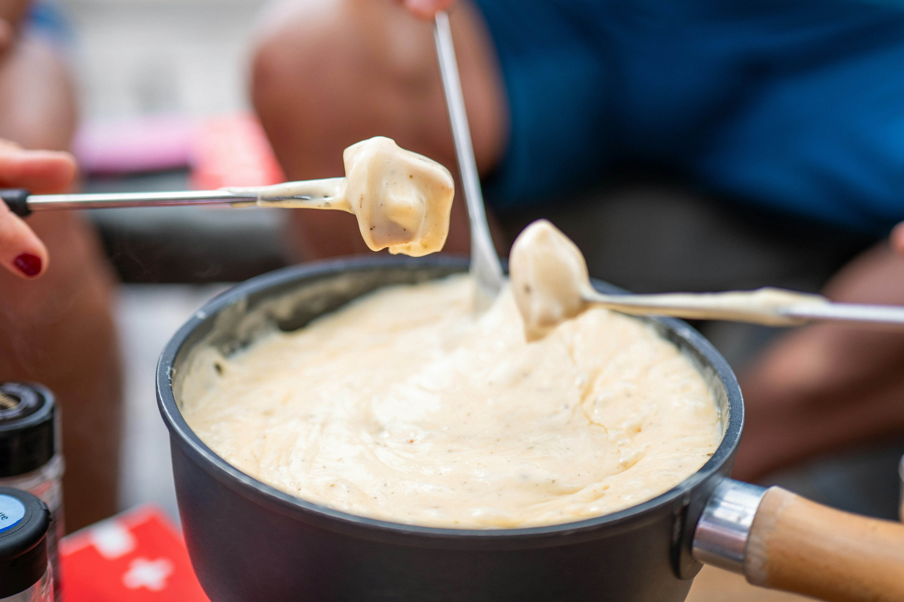

Cheese Fondue

Warm, cheesy, savory dip perfect for bread, veggies, and more.
Ingredients
- 1 cup dry white wine
- 2 tablespoons all-purpose flour
- ¼ teaspoon ground nutmeg
- ½ pound shredded Swiss cheese
- ½ pound shredded Gruyère cheese
- ¼ teaspoon salt
- 1 loaf French bread, cubed
Directions
- Heat fondue pot over medium-low.
- Bring wine to a gentle simmer.
- Stir in flour and nutmeg until smooth.
- Add cheeses slowly, melting fully between additions.
- Season with salt and serve with French bread.
- Enjoy!